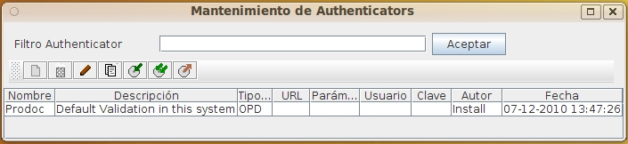

Al seleccionar la opción de administrar Sistemas de Autenticación, aparecerá la pantalla de listado de Sistemas de Autenticación. Esta pantalla permite realizar el mantenimiento de todos los Sistemas de Autenticación del sistema.
Cada vez que un usuario se conecta, se comprueba su identidad llamando al sistema de autenticación asignado al usuario. Todos los usuarios puede utilizar el mismo sistema o definir distintos sistemas para distintos perfiles de usuario. Independientemente del sistema de autenticación, el usuario debe estar dado de alta en el sistema, ya que debe asignársele sus permisos y preferencias y darse de alta en grupos y ACL, pues en otro caso no podrá ver ni modificar ningún documento. OPD soporta los tipos de Sistema de Autenticación:
Para filtrar los Sistemas de Autenticación que se desea revisar, basta introducir parte del nombre en el cuadro de texto y pulsar el botón. La lista de Sistemas de Autenticación que cumplen las condiciones aparecerá en la tabla de resultados. Si se pulsa el botón sin introducir ningún valor se visualizará todos los elementos sobre los que tenga permiso el usuario.La tabla de resultados muestra los datos:

Esa tabla de resultados puede ordenarse seleccionando la cabecera de cada columna. Puede también cambiarse el tamaño de cada columna arrastrando la línea separadora de las cabeceras
Sobre la tabla de resultados se dispone de varios botones que permiten realizar operaciones sobre el elemento seleccionado. Las operaciones disponibles son:
Debe tenerse en cuenta al exportar e importar que algunos elementos pueden tener dependencia de otros, por lo que debe exportarse todos los elementos relacionados y en el momento de importarse hacerlo en el orden adecuado
En caso de producirse un error (carencia de permisos del usuario, incoherencia de los datos, etc), la operación se cancela y se comunicará al usuario el motivo del error.
Ver: Mantenimiento Sistemas de Autenticación y Lista de Usuarios